転生したら剣でした
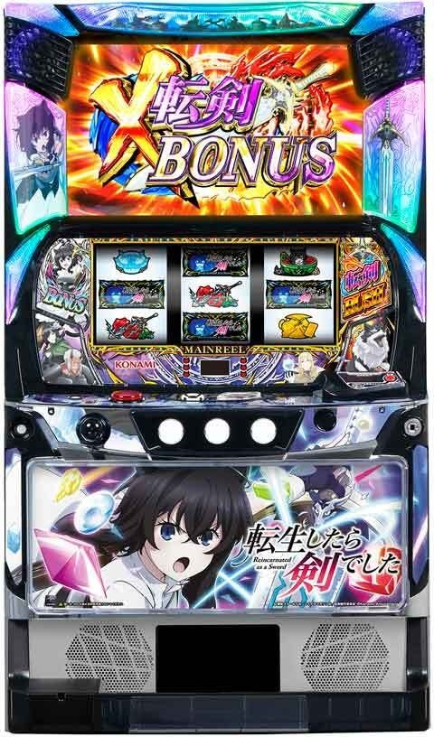
【天井情報】
AT間を最大970G消化で前兆を経由してAT濃厚のCZへ。
設定変更時はAT天井が600G＋αに短縮。
ボーナス間で最大1280G＋αでボーナスに当選。
ボーナス間天井はAT当選でリセットされないので注意。
通常時はフランボーナス、AT中に発動した場合はX転剣ボーナスとなる。
設定変更時はボーナス天井が980G＋αに短縮。
【リセット判別】
コナミのためガックン有効？
据置時、内部依存でゾーン前兆（300G、600G）が発生すると思われる。ただ、レア役から前兆に行きやすい機種のため前兆が被ると判断出来ない可能性あり。
リセット時、内部G数加算は無さそう？
【有利区間について】
「NOエンディングAT」を搭載。 内部的に有利区間がリセットされても見た目上はシームレスにATが継続!?
※ボーナス間天井はAT当選でリセットされない。ボーナス間ハマリは主にボーダー調整で使う感じ？
※ボーナス間ハマりゲーム数はAT中のゲーム数も含まれる。純増2.4枚が目安。
狙い目
【リセット狙い】
AT間 160Gから(ボーナス間不問）
ボーナス間単体 800Gから
【ゲーム数天井狙い】
AT間
ボーナス間0G想定 570Gから
ボーナス間600G想定 480Gから
ボーナス間単体
1100Gから
AT間とボーナス間天井狙いをする場合のコツ
AT当選後すぐにボーナス間天井発動するのが理想。
例えば、AT間500ハマり、ボーナス間800ハマりなら、ボーナス非当選でAT天井到達ならAT開始直後にボーナスの恩恵が受けれる。（AT中のボーナスはG数上乗せ性能高め）
設定変更後かつメニュー画面で当日のX転剣ボーナスが0回で、転剣RUSH回数が2回 or 4回の場合
ボーダーを150G下げる 「その他」の「X転剣ボーナス非当選狙い」参照
【ゾーン狙い】
天国ゾーン（120-150Gくらいで当選？）
前回天国っぽい場合 80Gから
前回超天国の可能性ある場合 0Gから
直近AT一撃512枚以上後 0Gから
前回天国っぽいかつ直近AT一撃512枚以上 0Gから（かなり強い）
※一撃512枚以上後は、有利切れ後、引き戻し含めた場合は狙えない。
300ゾーン
290Gから
※ゾーンで前兆発生しない事あり。下二桁20G回して前兆発生しなければやめで良さそう。
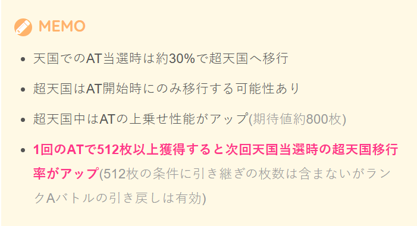
【有利区間関連狙い】
不明
【魔石狙い】
100個から
【示唆等の押し引き】
アイキャッチ
フランおやすみ中終了時 黒はモードC以上AT当選まで。赤はAT当選まで。
通常時 黒はモードB以上でボーダーを200Gから？赤はAT当選まで。
赤タイトル外し
CZ当選まで
CZシナリオ示唆
シナリオ10濃厚 必ずCZ当選まで
シナリオ7以上濃厚 積極派はCZ当選まで。慎重派はボーダー下げる感じ？
やめ時
AT終了後にフランおやすみ中(AT高確率)を消化しアイキャッチ（黒、赤は続行）確認してやめ。
- ボーナス間天井はATでリセットされないので必ず確認
- 天国モードは100G消化でAT濃厚のCZに当選
- 天国でのAT当選時は約30%で超天国へ移行
その他
履歴の見方
①フランお休み中の引き戻しとランクAバトルの履歴
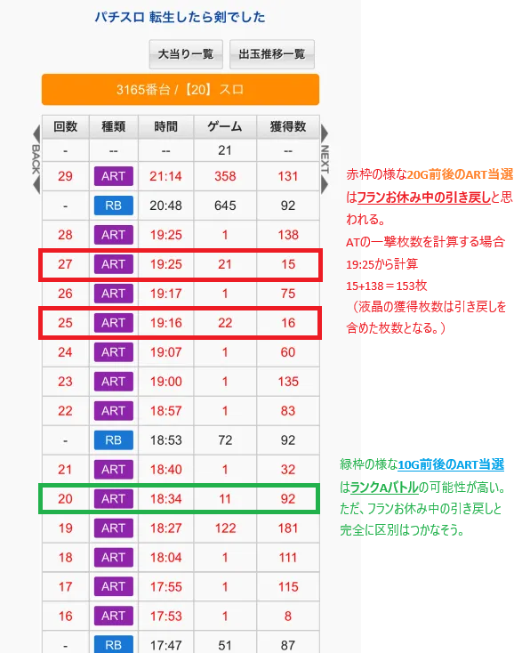
②ATの一撃枚数とAT中のボーナス間ハマりG数の計算方法
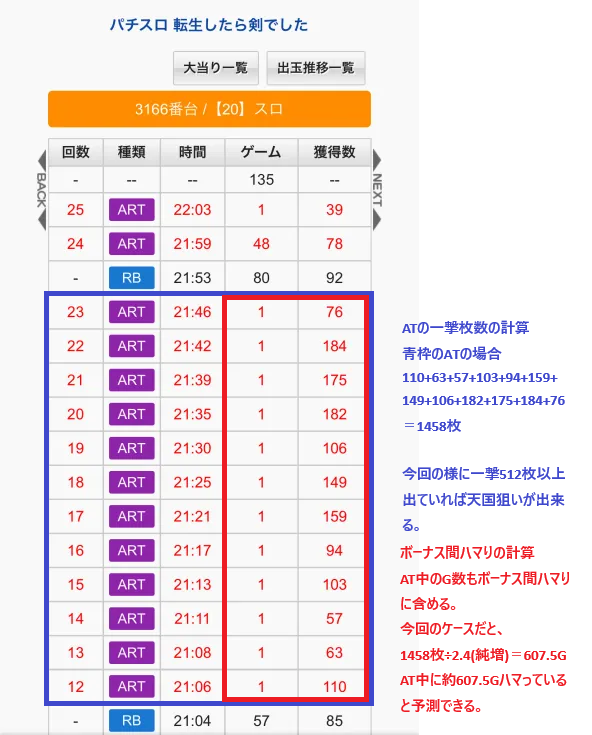
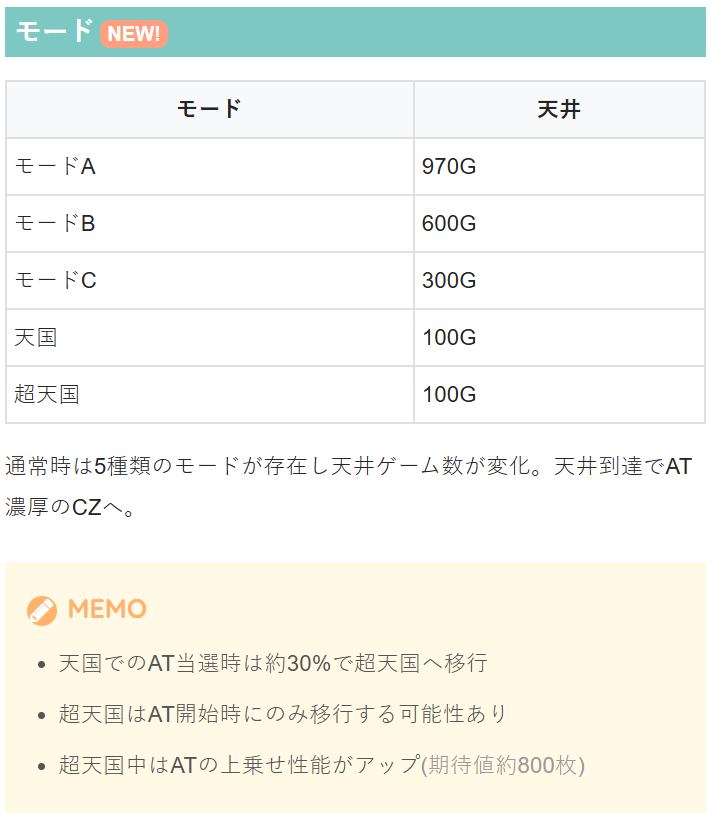
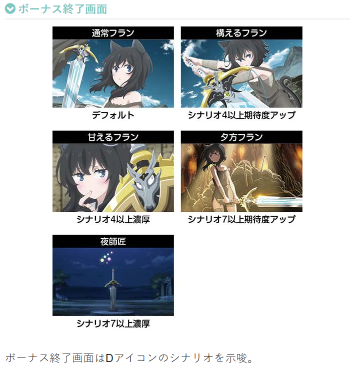
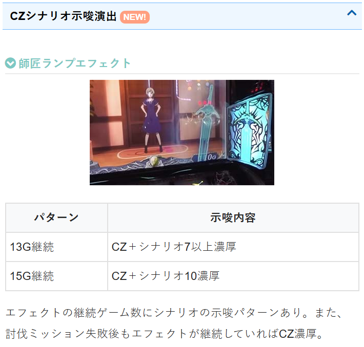
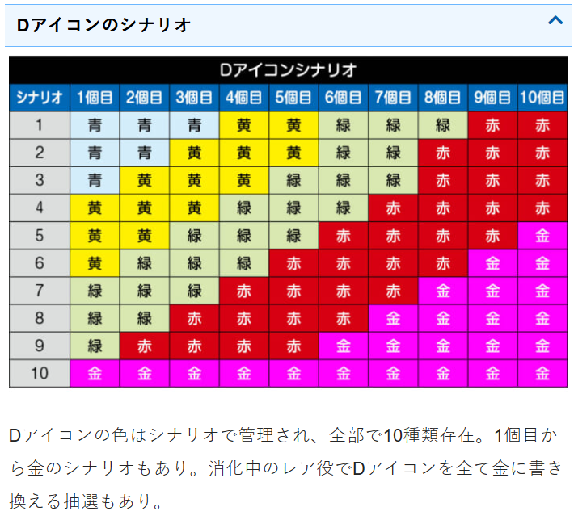
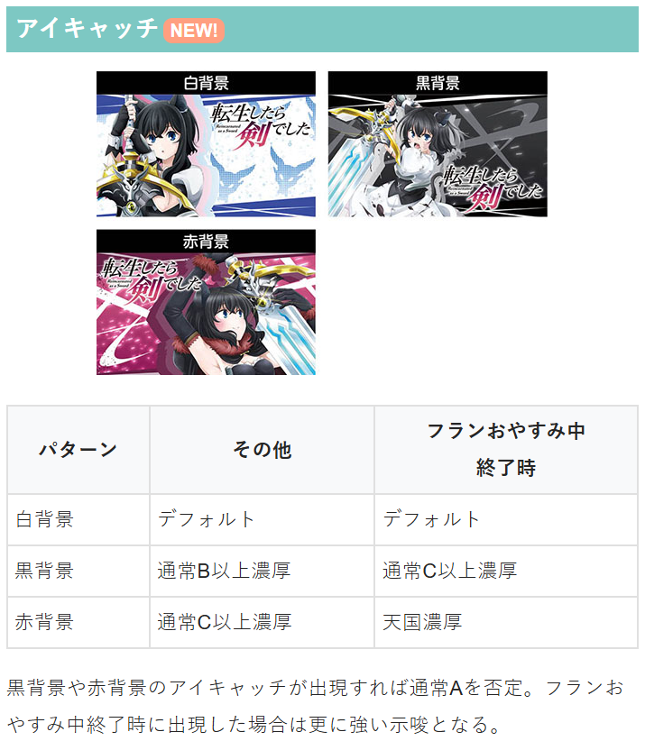
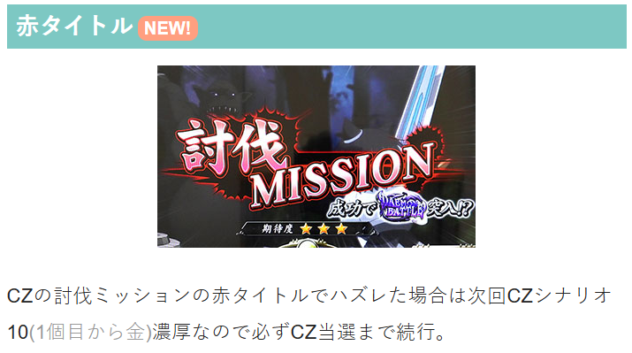
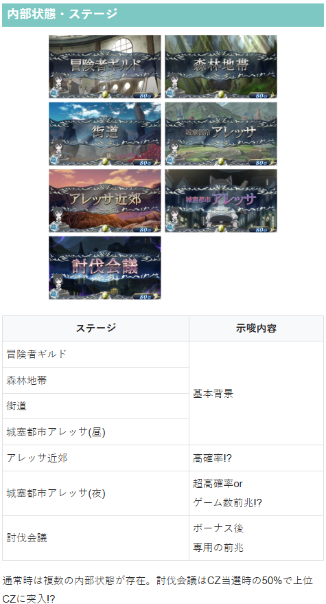
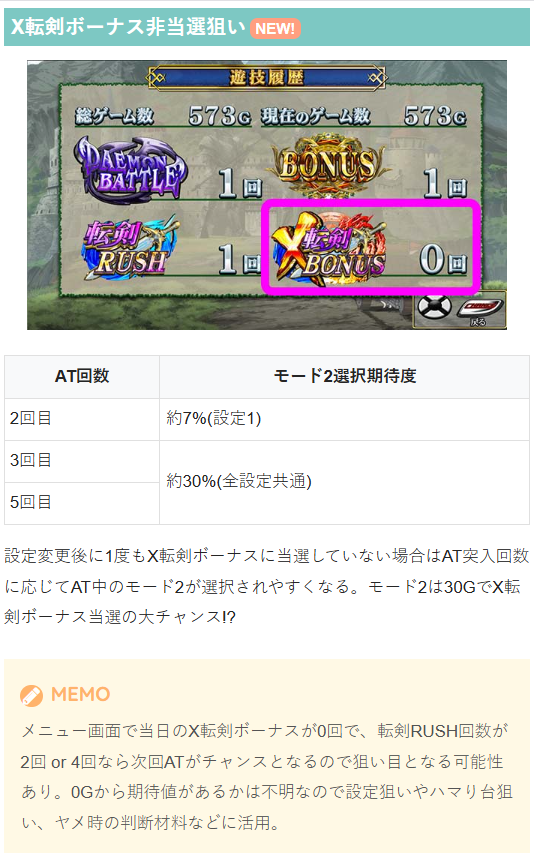
参考元
基本情報
- メーカー: コナミアミューズメント
- 機械割: 97.9% 〜 112.1%
- 導入開始日: 2025年08月04日（月）
- ゲーム性概要: ●通常時はレア役・ゲーム数消化を契機に当選するCZからATを目指すゲーム性 ●CZは4GのST型で小役入賞でDアイコンを破壊するほど期待度がアップ ●AT「転剣ラッシュ」は純増約2.4枚、初期ゲーム数50G以上のゲーム数上乗せ型 ●AT中もレア役やゲーム数消化で上乗せや特化ゾーン・ボーナスを抽選 ●CZ・ボーナス・AT・特化ゾーンのすべてに存在する「スーパー」は、性能が大幅にアップした上位版 ●「スーパーレジェンド」突入で「スーパー」が連続!? ●エンディングがないので獲得した上乗せはすべて消化可能！


打ち方
打ち方・小役
打ち方（小役狙い）
「最初に狙う絵柄」 左リールにBARを目押し。基本的に取りこぼす役はないので、中＆右リールはフリー打ちでOKだ。

「レア役の停止形」

中リールのスイカはBARが代用になる。
「転剣目の停止形」 ※転剣目はおもにボーナス・特化ゾーン中（レア役高確中）の中1stで停止

強チェリー時の中リールに転剣目が止まれば転剣強チェリー。 転剣強チェリーは強チェリーの約7回に1回程度の割合で成立していて、成立＝CZ当選濃厚だ。
「赤7狙いは小役1確目あり」 左リールに赤7を狙い、赤7が枠下に止まればリプレイorスイカor強チャンス目1確。小役入賞が重要なCZ中などにオススメだ。 赤7狙いでも赤ブランクがチェリーの代用になるため、チェリー（1枚）の取りこぼしはない。

変則押しはNG
通常時、押し順ナビなし時は左リール第1停止での消化を推奨。 AT中のレア役高確中（特化ゾーンなど）は押し順ナビが発生していなければ変則押しもOKだ。

解析情報通常時
小役関連
小役確率
| 役 | 確率 |
|---|---|
| リプレイ | 1/7.3 |
| 弱チャンス目 | 1/99.9 |
| 弱チェリー | 1/129.3 |
| スイカ | 1/142.5 |
| 強チャンス目 | 1/293.9 |
| 強チェリー | 1/296.5 |
| 小役揃い合算 | 1/3.13 |
| レア役合算 | 1/31.7 |
| 強レア役合算 | 1/147.6 |
レア役高確中・転剣目確率
| 役 | 確率 |
|---|---|
| 転剣目合算 | 1/10.0 |
| レア役合算 | 1/7.6 |
| 強レア役合算 | 1/84.9 |
内部状態関連
内部状態概要
［フラン・師匠ランプに注目］

各ランプがオレンジ色に点灯すれば対応した高確を示唆。フランランプはボーナス高確、師匠ランプはCZ高確に対応している。
ランプの点灯契機
| ランプ | 契機 |
|---|---|
| フラン | スイカ、チャンス目 |
| 師匠 | チェリー |
筐体左右のランプがオレンジに点灯すれば高確滞在を示唆。高確中は夕方ステージに滞在しやすい。
内部状態移行契機
| 状態 | 移行契機 |
|---|---|
| CZ高確 | チェリーでの抽選 |
| ボーナス高確 | スイカ、チャンス目での抽選 |
| 超高確 | 2つの高確が複合した時の一部で移行 |
| その他 | 100G消化ごとや、 CZ・ボーナス・AT終了後も高確移行を抽選 |
ボーナス高確とCZ高確は複合して滞在する可能性があり、複合時の一部で超高確へ移行する。
師匠ランプエフェクトゲーム数の示唆
| ゲーム数 | 示唆 |
|---|---|
| 13G継続 | CZ濃厚かつシナリオ7以上濃厚 |
| 15G継続 | CZ濃厚かつシナリオ10濃厚 |
| 討伐ミッション失敗後も エフェクトが継続 | CZ当選濃厚 |
※レア役の次ゲームを1G目とカウント
［師匠ランプエフェクト］

ゲーム数消化での高確抽選
レア役だけでなく、100G消化ごとにも高確移行抽選がおこなわれ、当選時は13Gの保障ゲーム数を獲得。13G消化後はハズレの約20%で通常へ転落する。

モード
モードごとの天井ゲーム数
| モード | 天井 |
|---|---|
| 通常A | 970G＋α |
| 通常B | 600G＋α |
| 通常C | 300G＋α |
| 天国 | 100G＋α |
| 超天国 | 100G＋α |
規定ゲーム数到達後は、前兆を経由してAT当選濃厚のCZに突入。天国中のAT当選時は約30%で超天国へ移行、超天国は次回も超天国へ移行するチャンスだ。
特定区間のAT当選期待度（設定1・モード平均）
| ゲーム数 | 期待度 |
|---|---|
| 300～350G | 約25% |
| 600～650G | 約21% |
通常A〜Cを平均した時の期待度は上記の通り。300～350Ｇは狙い目といえる。
通常モード振り分け（設定1・設定変更時）
| モード | 振り分け |
|---|---|
| 通常B | 約40% |
| 通常C | 約40% |
| 天国 | 約20% |
設定変更後は通常B以上濃厚。設定1でも約20%で天国へ移行するため狙う価値アリだ。 通常モードはAT終了後に再抽選される（AT後の振り分けは調査中）。
モードごとのAT性能
| モード移行 | AT性能 |
|---|---|
| 次回超天国以外 | 通常性能 |
| 天国→超天国 | 上乗せ性能アップ |
| 超天国→超天国 | 上乗せ性能アップ |
| 超天国→超天国以外 | 通常性能 |
超天国移行率＆期待枚数
| 項目 | 内容 |
|---|---|
| 天国中の超天国移行率 | 約 30% |
| 超天国中のATの期待枚数 | 期待枚数約800枚 |
通常モードは基本的にAT終了時に抽選されるが、AT開始時に滞在モードを参照して抽選される超天国モードが存在。超天国当選時（超天国ループ時含む）のATは上乗せ性能が大幅にアップする。 天国滞在時は超天国移行のチャンスとなるため、天国のゾーン（100G＋α）での当たりが連続している場合は超天国期待度アップ＝大量獲得のチャンスだ。
「512枚獲得後は超天国移行率アップ」 1回のATで 512枚以上を獲得すると、次回天国移行時の超天国移行率がアップ する。1回のATでの獲得枚数が対象なので、100G＋αの引き戻し込みで合計512枚を超えた場合は無効。
フランおやすみ中での引き戻しは初当り扱いなので1回のATとカウントされないが、ランクAバトルで引き戻した場合は同一AT扱いのため、AT終了→ランクAバトル勝利の流れで512枚を獲得した場合は次回天国時の超天国移行率がアップする。
魔石
魔石概要
通常時のリプレイの一部（1契機で最大30個）・フランボーナス中の抽選で魔石を獲得。 魔石10個につき、CZ中のDアイコン色が1つ昇格する（CZ成功期待度アップ）。

「魔石高確」 CZ終了後に移行する魔石高確中はリプレイ成立で魔石獲得濃厚だ。

CZ・ボーナス抽選
CZ当選率（設定1）
| 役 | 通常 | CZ高確 | 超高確 |
|---|---|---|---|
| ベル・リプレイ | ー | ー | 約25% |
| 弱チェリー | 約3％ | 約25％ | 約63％ |
| 強チェリー | 約48％ | 約83％ | 濃厚 |
超高確中はチェリーだけでなく、リプレイ・ベルでもCZ当選の可能性あり。
対応役以外でのCZ当選率
| 役 | 通常 | CZ高確 | 超高確 |
|---|---|---|---|
| 弱チャンス目 | ー | 約5% | 約5% |
| スイカ | ー | 約5% | 約5% |
| 強チャンス目 | ー | 約5% | ー |
ボーナス当選率（設定1）
| 役 | 通常 | ボーナス高確 | 超高確 |
|---|---|---|---|
| 弱チャンス目 | 約3％ | 約20％ | 約50％ |
| スイカ | 約10％ | 約30％ | 約63％ |
| 強チャンス目 | 約25％ | 約50％ | 濃厚 |
対応役以外でのボーナス当選率
| 役 | 通常 | ボーナス高確 | 超高確 |
|---|---|---|---|
| 弱チェリー | ー | 約5% | 約5% |
| 強チェリー | ー | 約5% | ー |
基本的にチェリーはCZを、チャンス目・スイカはボーナスを抽選するが、高確以上に滞在している場合は対応役以外でもCZやボーナス当選の可能性がある。
デーモンバトル（CZ）
デーモンバトル概要
4G（スーパーは7G）＋αのST型CZ。小役入賞ごとにDアイコンを破壊していき、10個破壊できればAT濃厚。10個未満で終わった場合は最終的なアイコンの色でATを抽選、連続演出や探索ゾーン（前兆）を経由して結果が告知される。

デーモンバトル性能
| 項目 | 内容 |
|---|---|
| 契機 | チェリーでの抽選、フランボーナス後の約33% |
| 継続ゲーム数 | 4G＋α（スーパーは7G＋α）のST型 |
| AT期待度 | 約50%（スーパーは約72%） |
| 消化中の抽選 | 小役入賞でDアイコンを破壊、 破壊するほどAT期待度アップ |
| その他 | CZ開始時に所持している魔石10個につき、 Dアイコンの色が1つ昇格 |
デーモンバトル確率
| 設定 | 確率 |
|---|---|
| 1 | 1/215.8 |
| 2 | 1/214.2 |
| 3 | 1/211.0 |
| 4 | 1/204.8 |
| 5 | 1/201.2 |
| 6 | 1/197.8 |
「Dアイコン破壊」 小役揃い（1/3.13）でDアイコンを1つ以上破壊。

「Dアイコンシナリオ」
Dアイコンシナリオ
| シナリオ | 1→10個目 | |||||||||
|---|---|---|---|---|---|---|---|---|---|---|
| 1 | 青 | 青 | 青 | 黄 | 黄 | 緑 | 緑 | 緑 | 赤 | 赤 |
| 2 | 青 | 青 | 黄 | 黄 | 黄 | 緑 | 緑 | 赤 | 赤 | 赤 |
| 3 | 青 | 黄 | 黄 | 黄 | 緑 | 緑 | 緑 | 赤 | 赤 | 赤 |
| 4 | 黄 | 黄 | 黄 | 緑 | 緑 | 緑 | 赤 | 赤 | 赤 | 赤 |
| 5 | 黄 | 黄 | 緑 | 緑 | 緑 | 赤 | 赤 | 赤 | 赤 | 金 |
| 6 | 黄 | 緑 | 緑 | 緑 | 赤 | 赤 | 赤 | 赤 | 金 | 金 |
| 7 | 緑 | 緑 | 緑 | 赤 | 赤 | 赤 | 赤 | 金 | 金 | 金 |
| 8 | 緑 | 緑 | 赤 | 赤 | 赤 | 赤 | 金 | 金 | 金 | 金 |
| 9 | 緑 | 赤 | 赤 | 赤 | 赤 | 金 | 金 | 金 | 金 | 金 |
| 10 | 金 | 金 | 金 | 金 | 金 | 金 | 金 | 金 | 金 | 金 |
Dアイコンの並びは10種類のシナリオで管理されている。魔石でDアイコンの色が書き換えられるので、実際にはシナリオとは異なる色の並びとなるケースも多いが、魔石が使用される前の色を確認すればシナリオは判別できる。
最終的なDアイコン色ごとのAT期待度
| 色 | 期待度 |
|---|---|
| 青 | 調査中 （設定差あり） |
| 黄 | 調査中 （設定差あり） |
| 緑 | 約30% |
| 赤 | 約80% |
| 金 | AT濃厚 （金アイコン破壊時はATゲーム数上乗せ） |
「強攻撃チャンス」 小役揃い3連続後とレア役成立後は強攻撃チャンスに突入。滞在中にリプレイorレア役が成立すれば強攻撃になり、Dアイコンを2つ以上破壊できる。ベルは強攻撃とはならないが、次ゲームも強攻撃チャンスが継続する。

「Reゲーム数」 ST終了後に使用できる予備のゲーム数。ST中のレア役成立時に抽選され、強レア役は獲得濃厚だ。 強攻撃チャンス中は弱レア役でも必ずReゲーム数を獲得できる。

「デーモン魔石ジャッジ」

デーモン魔石ジャッジ
| 項目 | 内容 |
|---|---|
| 契機 | Dアイコン10個破壊後 |
| 継続ゲーム数 | 1G |
| レア役以外成立 | X転剣ボーナスを経由してATへ |
| レア役成立 | ゴブリンスタンピード濃厚、 強レア役ならスーパーにも期待 |
Dアイコンを10個全て破壊すると1G完結のデーモン魔石ジャッジに突入する。ここでレア役を引けば最強特化ゾーン「ゴブリンスタンピード」から、レア役以外時はX転剣ボーナスからスタート。 デーモンバトルスーパーなら、約50%でデーモン魔石ジャッジまで到達する。
探索ゾーン
CZ失敗後の一部で突入する前兆ステージ。最終的に連続演出でATの当否が告知される。 赤タイトルの探索ゾーン最下層ならAT当選濃厚だ。


探索ゾーン突入ルートごとのAT期待度
| ルート | 期待度 | |
|---|---|---|
| Dアイコン緑 | 連続演出→探索ゾーン | 約54％ |
| Dアイコン緑 | 探索ゾーン | 約95％ |
| Dアイコン赤 | 連続演出→探索ゾーン | 約95％ |
| Dアイコン赤 | 探索ゾーン | 約77％ |
Dアイコンが緑の場合は即探索ゾーン突入パターンが、赤の場合は連続演出を経由して探索ゾーンへ移行するパターンが激アツ！
天井
ボーナス間天井
| 項目 | 内容 |
|---|---|
| 天井ゲーム数 | 200G・500G・980G・1280G |
| 天井恩恵 | 通常時→フランボーナス AT中→X転剣ボーナス |
| 設定変更時 | 最大980G＋αに短縮 |
ボーナス間ゲーム数にも天井があり、最大1280G消化（高確&前兆中は終了後にボーナス本前兆がスタート）。ゲーム数はAT当選でクリアされず、AT中にボーナス間天井に到達した場合はX転剣ボーナスに当選する。
フリーズ
ロングフリーズ


ロングフリーズ性能
| 項目 | 内容 |
|---|---|
| 当選契機 | CZ・ボーナス本前兆当選時の一部 |
| 恩恵 | X転剣ボーナススーパー＋転剣ラッシュスーパー |
CZやボーナス本前兆当選時にフリーズを抽選。当選時はCZやボーナスが告知された次ゲームのレバーON時にフリーズが発生する。
解析情報ボーナス時
フランボーナス
フランボーナス概要
約80枚獲得できる擬似ボーナスで、消化中は成立役に応じて魔石の獲得を抽選。ボーナス終了時にCZ抽選がおこなわれ、当選時は約50%でデーモンバトルスーパーに突入する。

フランボーナス性能
| 項目 | 内容 |
|---|---|
| 契機 | スイカ・チャンス目成立時の抽選、 ボーナス間規定ゲーム数到達時 |
| 1Gあたりの純増 | 約4.5枚 |
| 獲得枚数 | 約80枚（スーパーは約160枚） |
| 消化中の抽選 | 15枚ベルで魔石獲得抽選、 リプレイ・レア役は獲得濃厚 （レア役は10個以上） |
| 終了後 | 約33%でCZに当選、 当選したCZは約50%でスーパー |
フランボーナス確率
| 設定 | 確率 |
|---|---|
| 1 | 1/398.6 |
| 2 | 1/388.7 |
| 3 | 1/380.8 |
| 4 | 1/352.0 |
| 5 | 1/335.0 |
| 6 | 1/316.8 |
「魔石獲得」

転剣ラッシュ（AT）
AT概要
ゲーム数管理型のAT。レア役やゲーム数消化での上乗せ・特化ゾーンを絡めて出玉を増やすゲーム性で、エンディングを搭載していないため、獲得したゲーム数はすべて消化できる。

転剣ラッシュ性能
| 項目 | 内容 |
|---|---|
| 契機 | CZ経由、フランおやすみ中の抽選 |
| 初期ゲーム数（※） | 50G＋α（スーパーは200G＋α） |
| 1Gあたりの純増 | 約2.4枚（EX転剣ラッシュは約4.5枚） |
| 消化中の抽選 | ゲーム数上乗せ、上乗せ高確、X転剣ボーナス、 特化ゾーン、EX転剣ラッシュ |
※ランクAバトルで引き戻した場合の初期ゲーム数は最低30G
ATモードごとの天井
| モード | 天井 |
|---|---|
| 初回専用 | 180G |
| モード1 | 250G |
| モード2 | 30G |
| モード3 | 1G |
AT中にもモードがあり、30G、70G、120G、180G、250G到達時に前兆を経由して報酬の当否を告知。最大250G消化で報酬を獲得可能だ。特化ゾーンに当選した場合、ゲーム数はクリアされる。 AT初当り時は基本的に初回専用モードが選ばれるが、モード2やモード3が選択される可能性もある。 また、特化ゾーン（X転剣ボーナスやゴブリンスタンピード）を経由してATに突入した場合、初回専用モードは選択されず、通常のモード移行抽選の数値で抽選される。
モードごとの特徴
| モード | 特徴 |
|---|---|
| 初回専用 | 30Gでの当選期待度約40%、 70Gまでの当選期待度約65% |
| モード1 | ー |
| モード2 | 報酬がX転剣ボーナスの期待度アップ |
| モード3 | ダンジョンバトル1戦目負け時に移行しやすい |
規定ゲーム数到達で獲得できる可能性のある報酬は、ダンジョンバトル・お着替えフラン・X転剣ボーナスの3種類。ダンジョンバトル1戦目敗北時は、 約13%でモード3へ移行 する。
ATモードごとの規定ゲーム数振り分け
| ゲーム数 | 初回専用 | モード1 | モード2 | モード3 |
|---|---|---|---|---|
| 1G | ー | ー | ー | 100% |
| 30G | 約40％ | 約10％ | 100% | ー |
| 70G | 約25％ | 約8％ | ー | ー |
| 120G | 約8％ | 約10％ | ー | ー |
| 180G | 約27% | 約32％ | ー | ー |
| 250G | ー | 約40% | ー | ー |
［前兆ステージ］ 前兆は接近中と大接近中の2種類。大接近なら本前兆の大チャンスだ。


X転剣ボーナス非当選時 AT当選回数別のATモード2選択期待度
※X転剣ボーナス非当選のまま、該当する回数ATに当選した場合の数値
ATゲーム数上乗せ当選率
| 役 | 当選率 |
|---|---|
| 弱チェリー | 約30% |
| スイカ | 約4% |
| 弱チャンス目 | 約8% |
| 強レア役 | 上乗せ濃厚 |
上乗せゲーム数振り分け
| 上乗せ | 弱チャンス目 | 弱チェリー | スイカ | |
|---|---|---|---|---|
| ＋10G | 77.6% | 84.2% | ー | |
| ＋20G | 12.5% | 10.2% | 64.8% | |
| ＋30G | 8.6% | 4.3% | 21.4% | |
| ＋50G | 0.9% | 0.9% | 12.6% | |
| ＋100G | 0.4% | 0.4% | 0.4% | |
| ＋200G | ー | ー | 0.4% | |
| ＋300G | ー | ー | 0.4% | |
| 上乗せ | 強チャンス目 | 強チェリー | ||
| ＋10G | ー | ー | ||
| ＋20G | 70.2% | 61.4% | ||
| ＋30G | 17.2% | 24.8% | ||
| ＋50G | 9.4% | 10.2% | ||
| ＋100G | 2.4% | 2.7% | ||
| ＋200G | 0.4% | 0.5% | ||
| ＋300G | 0.4% | 0.4% |
1契機の上乗せゲーム数は10〜300G。 強レア役で上乗せを獲得しなかった場合、EX転剣ラッシュ当選の大チャンスだ。
「上乗せ魔石（後乗せ）」

魔石色ごとの上乗せゲーム数
| 色 | 上乗せ |
|---|---|
| 青 | ＋10G以上 |
| 黄 | ＋20G以上 |
| 緑 | ＋30G以上 |
| 赤 | ＋50G以上 |
| 紫 | ＋100G以上 |
上乗せ当選時の一部は上乗せ魔石（後乗せ）になる。 魔石は液晶下部に5個分までストックされ、色で上乗せされるゲーム数が異なる。
上乗せ高確
弱チャンス目の一部で上乗せ高確へ移行（液晶左右に帯が出現）。高確中は弱レア役でも必ず上乗せに当選する。

強レア役は上乗せ高確以外でも上乗せ濃厚なので、上乗せ高確中は上乗せされるゲーム数が優遇（＋100G以上の期待度アップ）。 上乗せ高確中以外も、X転剣ボーナス中やお着替えフラン中など、レア役が上乗せ濃厚となる状況での強レア役は大量上乗せの期待度が高い。
上乗せ高確移行率
| 役 | 移行率 |
|---|---|
| 弱チャンス目 | 約11％ |
強レア役・上乗せゲーム数振り分け
| ゲーム数 | 強チャンス目 | 強チェリー |
|---|---|---|
| ＋10Ｇ | ー | ー |
| ＋20Ｇ | 67.8% | 58.7% |
| ＋30Ｇ | 17.2% | 24.8% |
| ＋50Ｇ | 9.4% | 10.2% |
| ＋100Ｇ | 4.8% | 5.4% |
| ＋200Ｇ | 0.4% | 0.5% |
| ＋300Ｇ | 0.4% | 0.4% |
EX転剣ラッシュ
レア役成立時や各種本前兆中、特化ゾーン中などに突入する可能性のある特殊なAT。純増が約4.5枚/Gに上がるだけでなく、 消化中の上乗せ確率が約1/35にアップ している。 EX転剣ラッシュ中はゲーム数消化による抽選やお着替えフラン、ダンジョンバトル抽選がおこなわれなくなる代わりに、全役でX転剣ボーナスを抽選。X転剣ボーナスに当選するとEX転剣ラッシュも終了する。

EX転剣ラッシュ性能
| 項目 | 内容 |
|---|---|
| 契機 | レア役成立時・本前兆中・特化ゾーン中の一部 |
| 1Gあたりの純増 | 約4.5枚 |
| 消化中の抽選 | 約1/35で上乗せに当選、 全役でX転剣ボーナスを抽選 |
| 終了条件 | X転剣ボーナス当選 |
| 期待枚数 | 約2000枚（※） |
※EX転剣ラッシュの前後を含むトータルの期待枚数（設定1）
［シャッターが閉まると終了］ シャッター演出でX転剣ボーナス当選を告知する。

レア役での特化ゾーン当選率
| 役 | ダンジョンバトル | お着替えフラン orX転剣ボーナス |
|---|---|---|
| 弱チャンス目 | 0.2% | 4.3% |
| 弱チェリー | 8.3% | 0.2% |
| スイカ | 0.2% | 8.3% |
| 強チャンス目 | 0.2% | 13.0% |
| 強チェリー | 21.6% | 3.2% |
ダンジョンバトル
ダンジョンバトル概要
5G or 8GのST型上乗せ特化ゾーンで、転剣目を含むレア役成立で勝利濃厚、敵のランクに応じて報酬が変化。5の倍数戦目はランクS以上の敵が出現する。

ダンジョンバトル性能
| 項目 | 内容 |
|---|---|
| 契機 | AT中レア役での抽選、規定ゲーム数到達時の一部 |
| 継続ゲーム数 | 5G（スーパーは8G）のST型 |
| 消化中の抽選 | レア役成立で勝利となり報酬を獲得後次戦へ、 リプレイはSTゲーム数が＋1G |
| レア役確率 | 1/7.6（転剣目込み）・レア役は勝利濃厚 |
| 勝利期待度 | 1戦あたり約54%（スーパーは約74%） |
| その他 | 5戦ごとにランクS以上の敵が出現 |
強レア役で倒したり、ジャッジゲームでレア役を引くと上位報酬への書き換えに期待できる。
「ランクごとの報酬」

ランクごとの報酬
| ランク | 内容 |
|---|---|
| D | ＋10G以上 |
| C | ＋20G以上 |
| B | ＋30G以上 |
| A | ＋50G以上 |
| S | 1/3.4でゴブリンスタンピードに当選、 非当選時は＋100G以上、 虹魔石ジャッジゲームのレア役はゴブリンスタンピード濃厚 |
| SS | ゴブリンスタンピード濃厚 |
※ゲーム数上乗せのMAXは＋600G
ランクS・SSの敵に勝利すると虹魔石ジャッジが発生。敵を倒した時の役に応じて報酬が抽選される。虹魔石ジャッジ中は転剣目が成立しても狙えは発生しないため、中押しで転剣目を狙い、止まればゴブリンスタンピード濃厚だ。
「レア役示唆裏ボタン」 レバーON後、第1停止ボタンを押す前にチャンスボタンを押して告知音が鳴ればレア役成立を示唆。7PUSH目で鳴れば強レア役濃厚だ。
「転剣目を狙え」 狙え発生時の転剣目停止期待度は約76%。液晶中央に剣のあおりが発生→狙え発生なら転剣目停止濃厚、剣戟のエフェクトが赤なら期待度アップだ。

5戦目ごとの敵ランク振り分け
| ランク | 振り分け |
|---|---|
| S | 約95％ |
| SS | 約5％ |
お着替えフラン
お着替えフラン概要
毎ゲーム上乗せが発生する特化ゾーンで、フランの衣装で上乗せゲーム数を示唆。5G間の上乗せがトータル35G以下だった場合、5Gが再セットされる。

お着替えフラン性能
| 項目 | 内容 |
|---|---|
| 契機 | AT中レア役での抽選、規定ゲーム数到達時の一部 |
| 継続ゲーム数 | 5G（スーパーは10G） |
| 消化中の抽選 | 成立役に応じてATゲーム数上乗せを抽選 |
| レア役確率 | 1/7.6（転剣目込み） |
| 平均上乗せ | 約60G（スーパーは約120G） |
| その他 | トータル上乗せが35G以下の場合、5Gを再セット |
お着替えフラン中の転剣目を狙えは上乗せ濃厚。
「フランの衣装」 緑背景は＋20G以上、赤背景なら＋50G以上濃厚だ。


強レア役・上乗せゲーム数振り分け
| ゲーム数 | 強チャンス目 | 強チェリー |
|---|---|---|
| ＋10Ｇ | ー | ー |
| ＋20Ｇ | ー | ー |
| ＋30Ｇ | 81.6% | 73.5% |
| ＋50Ｇ | 12.8% | 20.2% |
| ＋100Ｇ | 4.8% | 5.4% |
| ＋200Ｇ | 0.4% | 0.5% |
| ＋300Ｇ | 0.4% | 0.4% |
X転剣ボーナス
X転剣ボーナス概要
AT中のボーナスはX転剣ボーナス。約80or160枚獲得可能で、消化中は約1/3.2でATゲーム数の上乗せを獲得できる。

X転剣ボーナス性能
| 項目 | 内容 |
|---|---|
| 契機 | 通常時のCZでDアイコン10個破壊時の一部、 AT中レア役での抽選や規定ゲーム数到達時の一部、 AT中にボーナス間天井ゲーム数到達時 |
| 獲得枚数 | 約80枚（スーパーは約160枚） |
| 1Gあたりの純増 | 約4.5枚 |
| 消化中の抽選 | ATゲーム数上乗せ抽選 （レア役は上乗せ濃厚、15枚ベルは約50%で上乗せ） |
| 上乗せ確率 | 1/3.2 |
| レア役確率 | 1/7.6（転剣目込み） |
| 平均上乗せ | 約70G |
「転剣目を狙え」 狙え発生時の転剣目停止期待度は約70%。転剣目はレア役扱いなので、止まれば上乗せ濃厚だ。

「違和感演出」 ゲーム数上乗せの次ゲーム（15枚ベルで上乗せ時の約5%）で、BETできないなどの違和感演出が発生すれば、＋100G以上！
準備中の魔石抽選
X転剣ボーナス準備中は成立役に応じて魔石獲得を抽選。魔石1個につき、ATゲーム数1Gに変換される。

強レア役・上乗せゲーム数振り分け
X転剣ボーナス中の強レア役は＋20G以上濃厚。AT中に比べ、＋100G以上の割合も多い。
ゴブリンスタンピード
ゴブリンスタンピード概要
本機最強の特化ゾーン。1分間、通常遊技と擬似遊技を交互におこなう高速遊技でゲーム数を上乗せしていく。 見た目上、1分の時間制限があるゲーム性だが、もちろんゆっくりと打っても出玉的な損はないが、高速遊技で終了させた場合、ゴブリンスタンピードの終了画面で設定示唆演出が発生する特典付き。 ベルorレア役で上乗せを獲得できるため、ベルのヒキが重要だ。

ゴブリンスタンピード性能
| 項目 | 内容 |
|---|---|
| 契機 | 通常時のCZでDアイコン10個破壊時の一部、 ダンジョンバトルの虹魔石ジャッジの報酬 |
| 継続ゲーム数 | 1分（スーパーは2分） |
| 消化中の抽選 | 成立役に応じてATゲーム数を上乗せ、 連撃状態中は全役で上乗せ獲得 |
| レア役確率 | 1/7.6（転剣目込み） ※擬似遊技中も確率は同様 |
| 平均上乗せ | 約300G（スーパーは約520G） |
「連撃状態」 ゴブリンスタンピード開始時は連撃状態からスタート。連撃中は最低4G間、全役で上乗せを獲得。5G目以降のリプレイor1枚役で連撃からの転落を抽選。転落後はレア役を引けば再び連撃へ突入する。

基本的な抽選内容
| 役 | 連撃以外 | 連撃中 |
|---|---|---|
| リプレイ・1枚役 | 上乗せナシ | 上乗せ＋連撃抽選 |
| ベル | 上乗せ | 上乗せ＋連撃維持 |
| レア役 | 上乗せ＋連撃移行＋ 保障3Gを再セット | 上乗せ＋連撃維持＋ 保障3Gを再セット |
「残り時間」 規定時間が経過して、残り時間が??：??になると転落のピンチだが、連撃状態中は転落しない。 ちなみに、ゆっくりと打っていた場合、??：??になっても最低限のゲーム数を消化するまでは転落の可能性はない（時間加算が発生）。

「順押し・逆押しナビ」 師匠（剣）のナビはベル以上の小役成立（擬似遊技でのベル停止含む）を示唆。逆押しの方がレア役期待度が高い。

「終了画面」 ゴブリンスタンピードの終了画面右下にランク（A or S）が出現した場合、チャンスボタンを押すとリール左右のランプが点灯して設定を示唆する。 時間加算がおこなわれなかった場合（高速遊技時）はランクS、加算が10秒未満だった場合はランクAが表示。ランクA＜ランクSの順に設定示唆が発生しやすい。

ランクAバトル
ランクAバトル概要
AT終了時の一部で突入する引き戻しゾーンで、最大9G間リプレイを引かなければ引き戻し濃厚。レア役は成立した時点で引き戻し濃厚だ。

ランクAバトル性能
| 項目 | 内容 |
|---|---|
| 契機 | AT終了時の一部 （AT駆け抜け時は約65%で突入） |
| 継続ゲーム数 | 最大9G |
| 消化中の抽選 | 9G間リプレイを引かなければ引き戻し、 レア役は引き戻し濃厚 |
| 引き戻し期待度 | 約50% |
| 保障ゲーム数 | 2～9Gの保障ゲーム数あり |
| その他 | 引き戻し当選時のAT初期ゲーム数30G以上、 ATの消化ゲーム数（モード）は引き継ぎ |
保障ゲーム数振り分け
| ゲーム数 | 振り分け |
|---|---|
| 2G | 約64％ |
| 3G | 約20％ |
| 4G | ー |
| 5G | 約10％ |
| 6G | ー |
| 7G | 約5％ |
| 8G | ー |
| 9G | 約1％ |
保障ゲーム数内は、リプレイを引いても終了の可能性ナシ。9Gが選ばれた場合はその時点で引き戻し濃厚となる。
フランおやすみ中
フランおやすみ中概要
AT終了後（ランクAバトル終了後）に移行するAT直当りゾーン。最大20G継続で、フランが起きればAT当選となる。フランおやすみ中を経由したATは初当り扱いなので、初期ゲーム数は50G。

フランおやすみ中性能
| 項目 | 内容 |
|---|---|
| 契機 | AT・ランクAバトル終了後 |
| 継続ゲーム数 | 最大20G＋α |
| 消化中の抽選 | AT抽選 |
| その他 | AT当選時は初当り扱い（50Gスタート）、 モードも初回専用モードへ |
「フランの寝返り」 寝返りの回数が多いほどAT当選期待度がアップ！

スーパー/スーパーレジェンド
スーパー概要
CZ、ボーナス、AT、特化ゾーンのすべてに上位版のスーパーが存在。 スーパーの突入契機は各種状態当選時の抽選と、本前兆中のレア役による昇格の2種類がある。
各状態でスーパー突入時の変化内容 デーモンバトル（CZ）
| 通常 | ST4G、AT期待度約50% |
|---|---|
| スーパー | ST7G、AT期待度約72%、 デーモン魔石ジャッジ到達率約50% |
フランボーナス
| 通常 | 約80枚獲得、CZ当選率約33% |
|---|---|
| スーパー | 約160枚獲得、CZ当選濃厚 |
転剣ラッシュ（AT）
| 通常 | 初期ゲーム数50G |
|---|---|
| スーパー | 初期ゲーム数200G |
お着替えフラン
| 通常 | 5G継続、平均上乗せ60G |
|---|---|
| スーパー | 10G継続、平均上乗せ120G |
ダンジョンバトル
| 通常 | ST5G、撃破期待度約54% |
|---|---|
| スーパー | ST8G、撃破期待度約74% |
X転剣ボーナス
| 通常 | 約80枚獲得、平均上乗せ70G |
|---|---|
| スーパー | 約160枚獲得、平均上乗せ140G |
ゴブリンスタンピード
| 通常 | 1分間、平均上乗せ300G |
|---|---|
| スーパー | 2分間、平均上乗せ520G |
［デーモンバトルスーパー］

［フランボーナススーパー］

［転剣ラッシュスーパー］

［お着替えフランスーパー］

［ダンジョンバトルスーパー］

［X転剣ボーナススーパー］

［ゴブリンスタンピードスーパー］

スーパーレジェンド性能
| 項目 | 内容 |
|---|---|
| 契機 | スーパー突入時の一部 |
| 恩恵 | 継続する限り、各状態がスーパーに昇格 |
| 継続率 | 約77% |
| 気合枚数 | 約3500枚（※） |
※スーパーレジェンドの前後を含むトータルの期待枚数（設定1）
各状態のスーパー突入時の一部でスーパーレジェンドに突入。 スーパーレジェンド中はCZ、ボーナス、AT、特化ゾーンがすべてスーパーになるので超強力だ。
演出情報
通常時
ステージ解説
| ステージ | 示唆 |
|---|---|
| 昼 | デフォルト |
| 夕方 | 高確示唆 |
| 夜 | ゲーム数前兆or超高確示唆or本前兆 |
［昼］


［夕方］

［夜］ 夜は基本的に超高確を示唆するステージだが、CZやボーナスの前兆としても移行する可能性あり。 300G・600G到達時は夜へ移行する。

アイキャッチの示唆
| アイキャッチ | 右記以外 | フランおやすみ中終了時 |
|---|---|---|
| デフォルト | 示唆なし | 示唆なし |
| 黒背景 | 通常B以上 | 通常C以上 |
| 赤背景 | 通常C以上 | 天国以上 |
通常時はステージチェンジ時のアイキャッチで通常モードを示唆。黒や赤背景なら通常Aを否定する。
［デフォルト］

［黒背景］

［赤背景］

討伐ミッションでの示唆
| パターン | 示唆 |
|---|---|
| 赤タイトル | 失敗した場合はシナリオ10濃厚 |
| ☆4のミッション | トライ・エクスプロージョン発生で、 デーモンバトルスーパーorシナリオ7以上 |
［赤タイトル］ 討伐ミッションの赤タイトルで失敗した場合はシナリオ10（オール金アイコンのAT濃厚シナリオ）濃厚なので、必ずCZ当選まで続行したい。

［トライ・エクスプロージョン］

演出別の魔石獲得数
| 演出 | パターン | 獲得個数 |
|---|---|---|
| 看板破壊演出 破壊成功時の魔石数 | ゴブリン | 1個以上 |
| 看板破壊演出 破壊成功時の魔石数 | ゴブリン・メイジ | 2個以上 |
| 看板破壊演出 破壊成功時の魔石数 | ギュラン | 3個以上 |
| 看板破壊演出 破壊成功時の魔石数 | ツインヘッド・ベア | 5個以上 |
| 看板破壊演出 破壊成功時の魔石数 | オニキス・ウルフ | 10個以上 |
| 看板破壊演出 破壊成功時の魔石数 | トリックスター・スパイダー | 30個 |
| お風呂演出 | リプレイ成立 | 10個以上 |
［看板破壊演出］ 基本的に看板の種類で、破壊成功時の獲得魔石個数を示唆。グレーター・デーモンの看板は特殊で、破壊すればCZ本前兆濃厚になる。


［お風呂演出］ リプレイが揃えば魔石10個以上獲得濃厚だ。

内部状態示唆系演出
| 演出 | 示唆 |
|---|---|
| ミニキャラ通過 | ● フランが第2停止以降に通過：ボーナス高確濃厚 ● 師匠が第2停止以降に通過：CZ高確濃厚 ● 2人が通過：ダブル高確濃厚、第3停止で通過なら超高確濃厚 |
| 白告知 | ● ベルorリプレイ成立でいずれかの高確濃厚 |
| 入賞ランプ | ● ベルorリプレイ成立時の第3停止後、入賞ランプが白点灯で高確濃厚 ● 高頻度で発生すれば超高確に期待 |
［ミニキャラ通過］

［白告知］ 演出の種類は不問、色告知系の演出の白告知すべてが該当する。

［入賞ランプ］

討伐ミッション期待度
| ★の数 | 期待度 |
|---|---|
| 2 | 約20％ |
| 2.5 | 約30％ |
| 3 | 約60％ |
| 4 | 成功濃厚 |
VS系連続演出期待度
| 演出 | 期待度 |
|---|---|
| VSゴブリン | 約5％ |
| VSドナドロンド | 約15％ |
| VS青猫族 | 約30％ |
| VSツインヘッド・ベア | 約80％ |
エピソード系連続演出期待度
| 演出 | 期待度 |
|---|---|
| 魔石を多く手にいれろ！ | 約10％ |
| 枯渇の森から抜け出せ！ | 約20％ |
| グラトニー・スライムロードを倒せ！ | 約30％ |
| 決意のフラン | 約85％ |
討伐ミッションはCZ対応、VS系はボーナス対応の連続演出。 エピソード系はCZ後の前兆経由で発生し、ATをジャッジする。
［討伐ミッション］

［VS系連続演出］

［エピソード系連続演出］

前兆
討伐会議
フランボーナス後専用のCZ前兆ステージ。討伐会議を経由したCZはスーパー（上位CZ）に期待できる。

本前兆濃厚演出
演出ごとの本前兆濃厚パターン
スキル罠探知演出から発展
鑑定演出でクリムトから発展
クルス問いかけ演出の赤文字
SD師匠演出フランがキャッチ
お前は負けない！演出が発生
［スキル罠探知演出→発展］


［鑑定演出：クリムト］


［クルス問いかけ演出の赤文字］

［SD師匠演出のフランキャッチ］

［お前は負けない！演出］

AT
前兆ステージ移行パターン別の本前兆期待度
| パターン | 期待度 |
|---|---|
| レア役契機で移行 | 約38% |
| シャッター演出経由で移行 | 約90% |
| 30Gや70Gなど 規定ゲーム数到達ゲームで即移行 | 本前兆濃厚 （レア役契機を除く） |
| 29Gや69Gなど、規定ゲーム数の 1G手前でゲーム数表示が高速で動く | 本前兆期待度アップ |
演出ごとの上乗せ法則
| 演出 | 法則 |
|---|---|
| 黒猫族と進化演出 | ● 強チェリー対応 ● ＋30G以上 ● 強チェリー否定で＋50G以上 |
| カレー演出 | ● ＋30G以上 |
| アマンダ回想演出 | ● 強チャンス目対応 ● ＋50G以上 ● 強チャンス目否定で＋100G以上 |
| 転生乗せ演出 | ● ＋100G以上 |
| まじかるちゃんす演出 | ● ＋100G以上＆X転剣ボーナス当選 |
［黒猫族と進化演出］

［カレー演出］

［アマンダ回想演出］

［転生乗せ演出］

［まじかるちゃんす演出］

フラン決意のルーレット
ルーレットの組み合わせと継続回数で期待度変化（NEXT停止で継続）。3G目まで継続でダンジョンバトル以上濃厚、4G目まで継続すればX転剣ボーナス濃厚だ。

ルーレットのパターン 1G目
| パターン | ルーレット |
|---|---|
| パターン1 | ブランク・緑NEXT・ダンジョンバトル |
| パターン2 | ブランク・発展・ダンジョンバトル |
| パターン3 | 緑NEXT・発展・ダンジョンバトル |
| パターン4 | ダンジョンバトル・お着替えフラン・X転剣ボーナス |
2G目
| パターン | ルーレット |
|---|---|
| パターン5 | ブランク・赤NEXT・ダンジョンバトル |
| パターン6 | 発展・赤NEXT・ダンジョンバトル |
| パターン7 | ダンジョンバトル・発展・赤NEXT |
| パターン8 | ダンジョンバトル・お着替えフラン・X転剣ボーナス |
3G目
| パターン | ルーレット |
|---|---|
| パターン9 | 発展・ダンジョンバトル・金NEXT |
| パターン10 | ダンジョンバトル・お着替えフラン・金NEXT |
| パターン11 | ダンジョンバトル・お着替えフラン・X転剣ボーナス |
4G目
| パターン | ルーレット |
|---|---|
| パターン12 | X転剣ボーナス・X転剣ボーナス・X転剣ボーナス |
パターン別のトータル本前兆期待度
| パターン | 期待度 |
|---|---|
| パターン1 | 24.1% |
| パターン2 | 26.4% |
| パターン3 | 81.2% |
| パターン4 | 100% |
| パターン5 | 60.4% |
| パターン6 | 100% |
| パターン7 | 100% |
| パターン8 | 100% |
| パターン9 | 100% |
| パターン10 | 100% |
| パターン11 | 100% |
| パターン12 | 100% |
パターン別の本前兆期待度詳細
| パターン | ダンジョンバトル | お着替えフラン | X転剣ボーナス |
|---|---|---|---|
| パターン1 | 15.3% | 6.5% | 2.3% |
| パターン2 | 6.4% | 14.2% | 5.8% |
| パターン3 | 34.8% | 32.7% | 13.7% |
| パターン4 | 48.6% | 44.4% | 7.0% |
| パターン5 | 48.0% | 8.7% | 3.6% |
| パターン6 | 40.8% | 44.8% | 14.4% |
| パターン7 | 32.8% | 50.5% | 16.7% |
| パターン8 | 48.6% | 44.4% | 7.0% |
| パターン9 | 81.8% | 12.5% | 5.7% |
| パターン10 | 92.0% | 6.0% | 2.0% |
| パターン11 | 48.6% | 44.4% | 7.0% |
| パターン12 | ー | ー | 100% |
NEXT停止時の本前兆期待度
| NEXT | ダンジョン バトル | お着替え フラン | X転剣 ボーナス | トータル |
|---|---|---|---|---|
| 緑 | 45.2% | 17.8% | 6.3% | 69.3% |
| 赤 | 73.3% | 18.9% | 7.8% | 100% |
| 金 | ー | ー | 100% | 100% |
連続演出期待度
| 演出 | 期待度 |
|---|---|
| アーミービートルを倒しきれ | 約15％ |
| オニキス・ウルフを従えよ | 約40％ |
| 美味しいハンバーグを作れ | 約80％ |
| クラッドを倒せ | 約90％ |
［クラッドを倒せ］ 連続演出成功でダンジョンバトルorお着替えフランorX転剣ボーナス濃厚！

BGMの種類
| BGM | 楽曲（アーティスト） |
|---|---|
| OP曲 | 転生したら剣でした（岸田教団＆ＴＨＥ明星ロケッツ） |
| ED曲 | more＜STRONGLY（黒崎真音） |
BGM変化条件＆恩恵
| BGM | 恩恵・条件 |
|---|---|
| OP曲 | ● 残りATゲーム数が300G以上になった時のデフォルト ● 300G未満で流れると、残りゲーム数以内の特化ゾーン当選濃厚 |
| ED曲 | ● 残りATゲーム数が300G以上になった時に流れると、100G以内の特化ゾーン当選濃厚 |
隠しコマンドを入力するとAT中のBGMを変更可能。もちろん、任意でBGMを変えた場合は上記の法則は適用されない。
「BGM変化の隠しコマンド」 AT中にメニュー画面を開き、隠しコマンド（上上下下左右左右）を入力すると、BGMを変更可能。 TOP画面での入力時はOP曲、遊技履歴画面での入力時はED曲に変化。同じ画面で再度隠しコマンドを入力すれば解除ができる。
［TOP画面］

［遊技履歴画面］

本前兆期待度の高い演出
本前兆に期待できる演出
会話演出の青セリフ→青セリフ：期待度約75%
ビートル通過演出が弱チャンス目以外で発生：期待度約75%
押し順ナビの黒数字： 本前兆濃厚
赤ビートル通過演出： 本前兆濃厚
赤背景のゴブリンナビ演出＋押し順ナビ： 本前兆濃厚
ドナドロンド扉演出で「ワイド・インパルス」で上乗せなし： 本前兆濃厚
師匠の補助魔法演出で「センシズ・ブースト」で上乗せなし： 本前兆濃厚
［会話演出］

［ビートル通過演出］

［赤ビートル通過演出］

［押し順ナビの黒数字］

［赤背景のゴブリンナビ演出］

［ドナドロンド扉演出：ワイド・インパルス］


［師匠の補助魔法演出：センシズ・ブースト］

ボーナス
ボーナス終了画面の示唆
| 画面 | 示唆 |
|---|---|
| デフォルト | 示唆なし |
| 構えるフラン | シナリオ4以上示唆 |
| 甘えるフラン | シナリオ4以上濃厚 |
| 夕方フラン | シナリオ7以上示唆 |
| 師匠 | シナリオ7以上濃厚 |
フランボーナスの終了画面では、次回CZのDアイコンシナリオを示唆する。
［デフォルト］

［構えるフラン］

［甘えるフラン］

［夕方フラン］

［師匠］

上乗せ法則
| 演出 | 法則 |
|---|---|
| チャンスボタン上乗せ演出 | ● フランが乗っていれば＋50G以上 |
| まじかるちゃんす演出 | ● 銅箱：＋100G以上 ● 銀箱：＋200G以上 ● 金箱：＋300G |
［チャンスボタン演出にフラン］

［まじかるちゃんす演出］


特化ゾーン
ゲーム数ごとの法則
| ゲーム数 | 法則 |
|---|---|
| 1G目 | ● 転剣目を狙え発生で 勝利濃厚 |
| 2G目 | ● 剣戟のあおり経由の狙え発生で勝利期待度：約13% ● レバーONで演出発生時は約15%で勝利、約59%でリプレイ成立 |
| 最終ゲーム | ● 転剣目を狙え発生で 勝利濃厚 ● ナビなし時の勝利期待度：約5% ● レバーONで無演出なら 勝利濃厚 ● ナビなし＋演出ありなら約7%で勝利、約15%でリプレイ |
その他演出法則
| 演出 | 法則 |
|---|---|
| ナビ系 | ● 左1stナビ・色目押しナビ発生で 勝利濃厚 |
| 強攻撃演出 | ● 上乗せゲーム数昇格濃厚 ● スタン・ボルト（トリックスター・スパイダー戦専用の強攻撃）は次ゲームの虹魔石ジャッジで ゴブリンスタンピード以上濃厚 |
| 虹魔石 ジャッジ中 | ● レバーON～第1停止ボタンを押すまでにチャンスボタンを押して、告知音発生なら ゴブリンスタンピード濃厚 。7回目のPUSHで発生なら ゴブリンスタンピードスーパー濃厚 |
［左1stナビ］

［色目押しナビ］ ダンジョンバトル中は基本的に左1stナビや色ナビが発生しないので、発生した場合は勝利濃厚となる。

［強攻撃演出］


［スタン・ボルト］

X転剣ボーナス中の演出法則
| 演出 | 法則 |
|---|---|
| 15枚ベル獲得時 | 可愛いGET表示・GETのみ表示ならベルフリーズ濃厚 |
| 師匠ナビ | ＋50G以上濃厚 |
| 一閃乗せ | 3桁上乗せへ昇格濃厚 |
［通常の15GET］ 15枚ベル時は上記の15GET表示がデフォルト。異なる（違和感）パターンならベルフリーズ発生濃厚だ。

※ベルフリーズは15枚ベルの一部で発生する3桁上乗せ濃厚演出
［可愛い15GET］

［可愛いGET］

［GETのみ］

［師匠ナビ］

［一閃乗せ］ 転剣目を狙え経由の上乗せ発生時は、第3停止時に一閃乗せ発生で3桁上乗せへの昇格濃厚だ。

カスタム
AT中の先告知モード
十字キーの上下ボタンで、上乗せの先告知頻度を変更可能。 先告知系をONにしている場合、レバーON時に告知音＋リール横ランプが赤く点灯すれば上乗せ濃厚、告知音がいつもと違えば（ランプも虹点灯）3桁上乗せ濃厚だ。